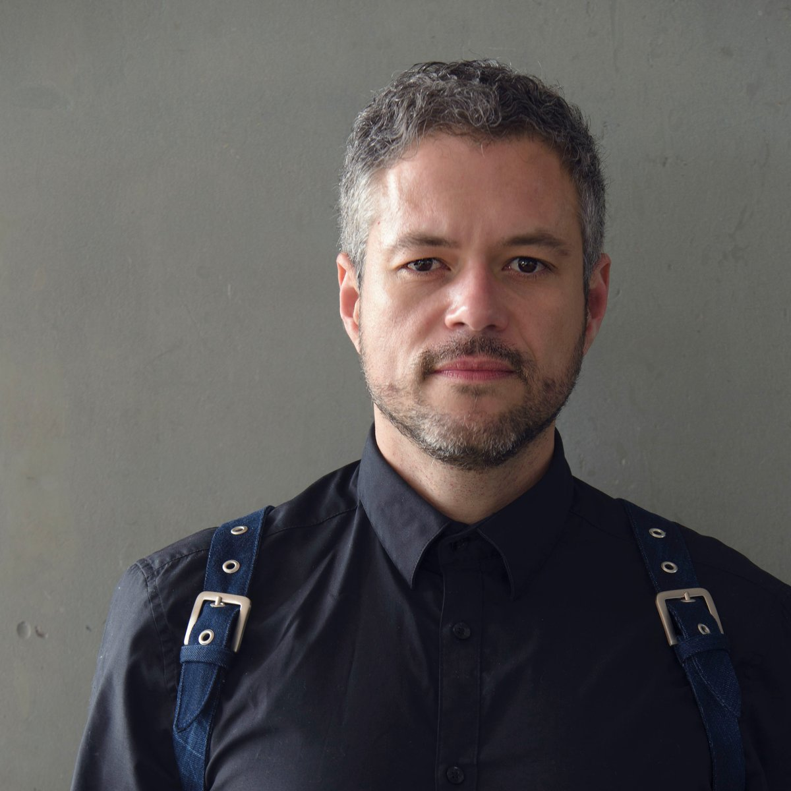

DISEÑO INTERACTIVO
EL ARTE DEL MAÑANA
¿Qué es el arte del mañana?
Es el arte electrónico del futuro, que combina visualización, música y escenografía, fusionando avances técnicos con conceptos de software. Ha evolucionado en nuevos géneros artísticos que se inclinan hacia la ciencia, la tecnología, la arquitectura de la información y la cultura digital, alejándose de los “ismos” artísticos tradicionales.
Su Autor
GERFRIED STOCKER
El arte como ensayo del futuro
La evolución del arte digital se puede ver reflejada con Ars Electronica debido a su dinamismo, diversidad y excelencia en el arte digital contemporaneo, configurandose asi un fondo internacional de recursos, talentos y conocimientos.
Nuevos sistemas de referencia
Internet acelera los procesos de producción, pero tambien la adquisición de nuevos conocimientos y habilidades, siendo una gran herramienta de materia productiva, logrando establecerse rápidamente y de una forma práctica.
Ampliación de las áreas de la influencia
Con el paso del tiempo han ido surgiendo nuevas perspectivas de interacción social, y por tanto artística, debido a la facilidad y rapidez que tenemos hoy en día para comunicarnos. Internet se ha vuelto una herramienta importante para el ser humano tanto en el ambito social, como cultural y comercial, esto debido a su gran alcance y conectividad, siendo un método rápido y cómodo para las personas. Además, a través de la revolución digital y las nuevas tecnologías se ha descubierto un nuevo tipo de arte que es el digital, el cual tiene como caracteristica la trascendencia que este tendría en el ordenador, siendo después esos datos guardados y utilizados como un instrumento más.
Melodized Pillow Hammock BLESS N°45 Soundperfume 2013
Melodized Pillow Hammock
La hamaca diseñada por BLESS se reutiliza para convertirse en un instrumento musical y un amplificador: una herramienta de interpretación definitiva. El usuario no solo puede sentarse en la hamaca, sino también puede “jugar” moviendo los grandes cojines de los que está hecha la hamaca. Equipo encargado: Ricardo O'Nascimento, Marije Baalman, Roel Smiths.
Ricardo O´Nascimento
Artista e investigador especializado en nuevos medios y arte interactivo. Su trabajo se enfoca en explorar las relaciones entre el cuerpo humano y su entorno, así como en desarrollar interfaces y sistemas autónomos para instalaciones interactivas y dispositivos móviles.
RELACIÓN TEXTO PROYECTO
Melodized Pillow Hammock
El proyecto se inspira en la idea de combinar el arte, el diseño y la tecnología para crear un ambiente interactivo y envolvente para brindar una experiencia sensorial inmersiva y multisensorial.
Diseño
En esencia, es una hamaca equipada con sensores y elementos tecnológicos que generan música en respuesta a los movimientos del usuario y los traduce en sonidos y melodías en tiempo real.